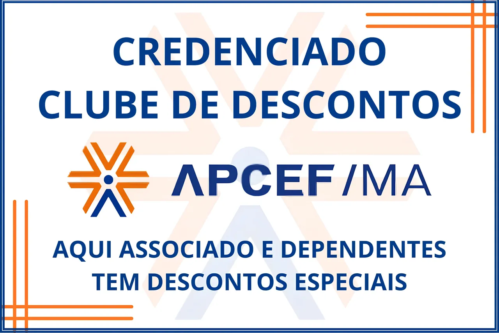

Início · Convênio APCEF
Atendimento particular · Convênio APCEF
Convênio APCEF em São Luís.
A Dra. Kerly Helena, ginecologista e obstetra — CRM/MA 3130 · RQE 5232 — com abordagem em medicina integrativa, atende beneficiários do APCEF Mais Saúde, rede credenciada da APCEF/MA. É o único convênio aceito no consultório; os demais atendimentos são particulares.
No Maranhão, o APCEF Mais Saúde funciona como rede credenciada de benefícios da APCEF/MA (Associação do Pessoal da Caixa Econômica Federal), e não como plano de saúde regulamentado pela ANS.

Quem pode usar o Convênio APCEF
- — Associados da APCEF/MA e seus dependentes, conforme as regras da associação.
- — Em caso de dúvida sobre a sua elegibilidade, confirme diretamente com a APCEF/MA.
- — As condições de atendimento seguem sempre as regras da APCEF/MA.
Como agendar pelo Convênio APCEF
-
01
Chame no WhatsApp
Diga que você é beneficiária APCEF e conte, se quiser, o motivo da consulta. Sem formulário e sem espera.
-
02
A equipe confirma
As condições são confirmadas conforme as regras da APCEF/MA, e vocês combinam o melhor horário para você.
-
03
Consulta confirmada
Você recebe a confirmação e chega no dia — exclusivamente com hora marcada.
O que levar no dia
- — Carteirinha ou comprovante de vínculo com a APCEF/MA
- — Documento com foto
- — Exames anteriores, mesmo antigos — eles ajudam a contar a sua história
- — Lista de medicamentos e suplementos em uso
Horários e onde fica o consultório em São Luís
Segunda a sexta, das 08h às 18h — exclusivamente com hora marcada. Agende pelo WhatsApp antes de ir: a doutora atende somente pacientes agendadas.
Condomínio Edifício Monumental (Monumental Shopping), Sala 310 — Av. Coronel Colares Moreira, Jardim Renascença, São Luís – MA · CEP 65065-720
Não é associado da APCEF?
O atendimento particular segue normalmente, com hora marcada. Você pode escolher entre a Consulta Integrativa avulsa — uma escuta longa, com plano terapêutico por escrito — ou a Jornada Integrativa de 3 meses, com retornos e acompanhamento próximo. A Jornada Integrativa é um programa particular.
Perguntas rápidas
O APCEF Mais Saúde é um plano de saúde?
Não. É a rede credenciada de benefícios da APCEF/MA, e não um plano de saúde regulamentado pela ANS. O atendimento segue as regras da associação.
Meus dependentes também podem usar?
Sim, associados da APCEF/MA e seus dependentes, conforme as regras da associação. Em caso de dúvida sobre elegibilidade, confirme diretamente com a APCEF/MA.
A consulta pela APCEF é diferente da particular?
Não. É a mesma consulta integrativa, com a mesma duração e o mesmo cuidado — muda apenas a forma de atendimento, conforme as regras da APCEF/MA.
Quanto custa a consulta pelo Convênio APCEF?
Os valores seguem a tabela vigente da APCEF/MA. Confirme diretamente com a associação; no agendamento pelo WhatsApp, a equipe orienta.
Preciso de autorização prévia da APCEF?
Oriente-se com a APCEF/MA sobre o procedimento vigente. No agendamento pelo WhatsApp, a equipe orienta o passo a passo.
A Jornada Integrativa de 3 meses entra no convênio?
A Jornada é um programa particular. A consulta avulsa pode ser atendida pelo convênio, conforme as regras da APCEF/MA.
Beneficiária APCEF? Agende sua consulta.
Chame no WhatsApp, diga que é beneficiária e a equipe cuida do resto — conforme as regras da APCEF/MA.
Agendar pelo WhatsApp